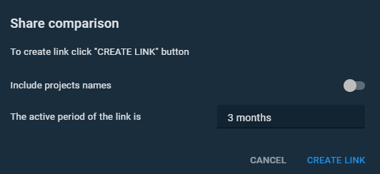
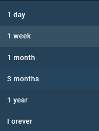
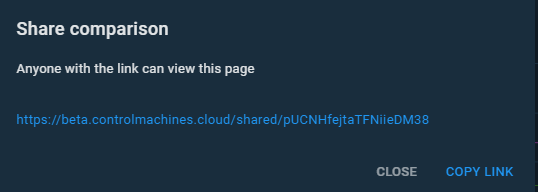

Sharing comparisons#
Briefly about sharing comparisons.
You can share a comparison with external users, just click the Share comparison button . The button is on the comparison's Chart tab.
That is for you to decide whether to include project names and what would be the active period of the link. You can find the relevant options in the Share comparison menu.

The following figure shows available periods of sharing:

After setting the parameters, click the CREATE LINK button, copy the link and send to a person you would like to share this comparison.

Parent article:
- Comparisons
Brief overview of Comparisons in Portal.